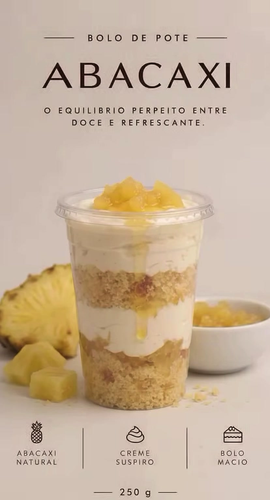

Abacaxi
Creme de suspiro, bolo macio e abacaxi natural.
Role devagar e veja cada camada.
Massa fofinha e creme leve, alternados até a boca do pote.
Pedaços da fruta com calda, colocados na hora de fechar o pote.
Tampa de cúpula, do jeitinho que você vê aqui.
Feitos em pequenas fornadas. Pergunte no WhatsApp quais saem essa semana.

Creme de suspiro, bolo macio e abacaxi natural.
Doce e ácido na medida, com calda da fruta.
Siga no Instagram pra saber primeiro.